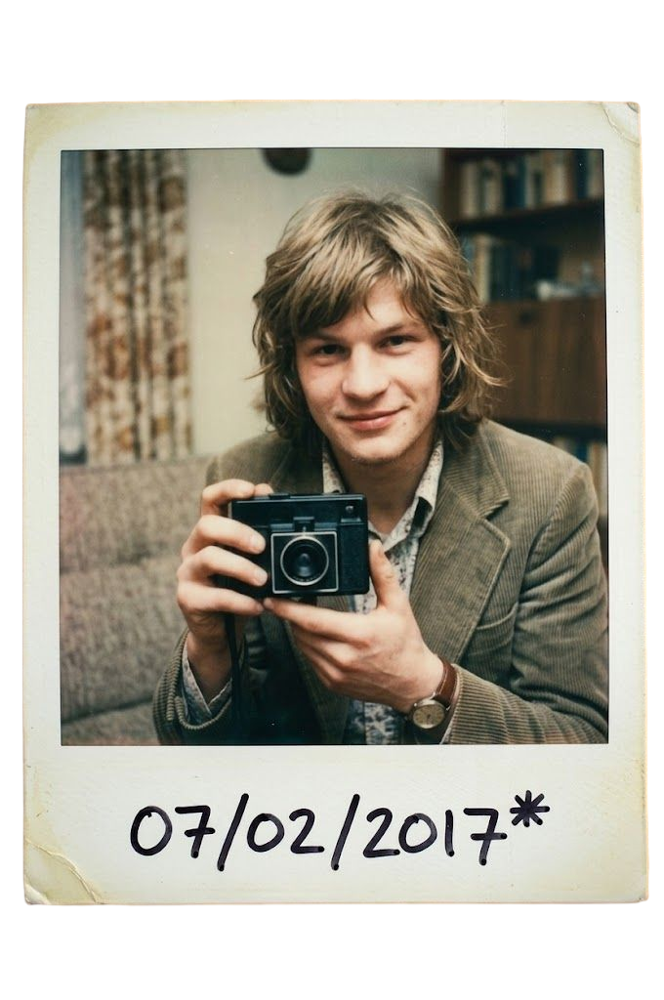
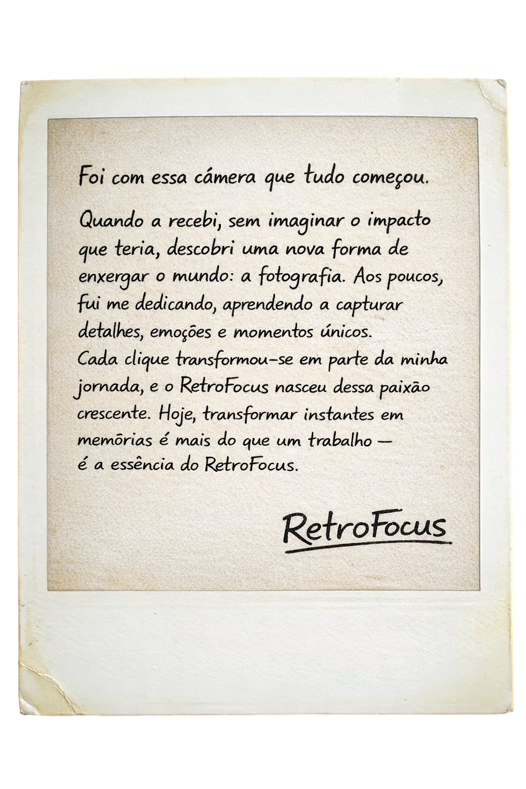

Fotografia Atemporal • Est. 2026
Nós resgatamos máquinas do tempo. Câmeras clássicas restauradas para criadores que valorizam o processo tátil e a imperfeição da película.
Acreditamos que usar filme não é sobre praticidade. É um compromisso com a luz e o tempo. Por isso, nossa restauração beira o exagero.
Nossa curadoria viaja pelo mundo resgatando clássicos abandonados pelo tempo, focando apenas em modelos mecanicamente superiores.
→Cada equipamento é aberto peça por peça, mapeando engrenagens, vedações de luz antigas e desgastes no mecanismo original.
→Remoção de fungos, poeira e realinhamento de elementos das lentes para garantir que sua visão chegue ao filme com a máxima nitidez.
→Não confiamos apenas em máquinas de medição. Toda câmera que sai de nossa oficina atirou e revelou pelo menos um rolo de filme.
→
